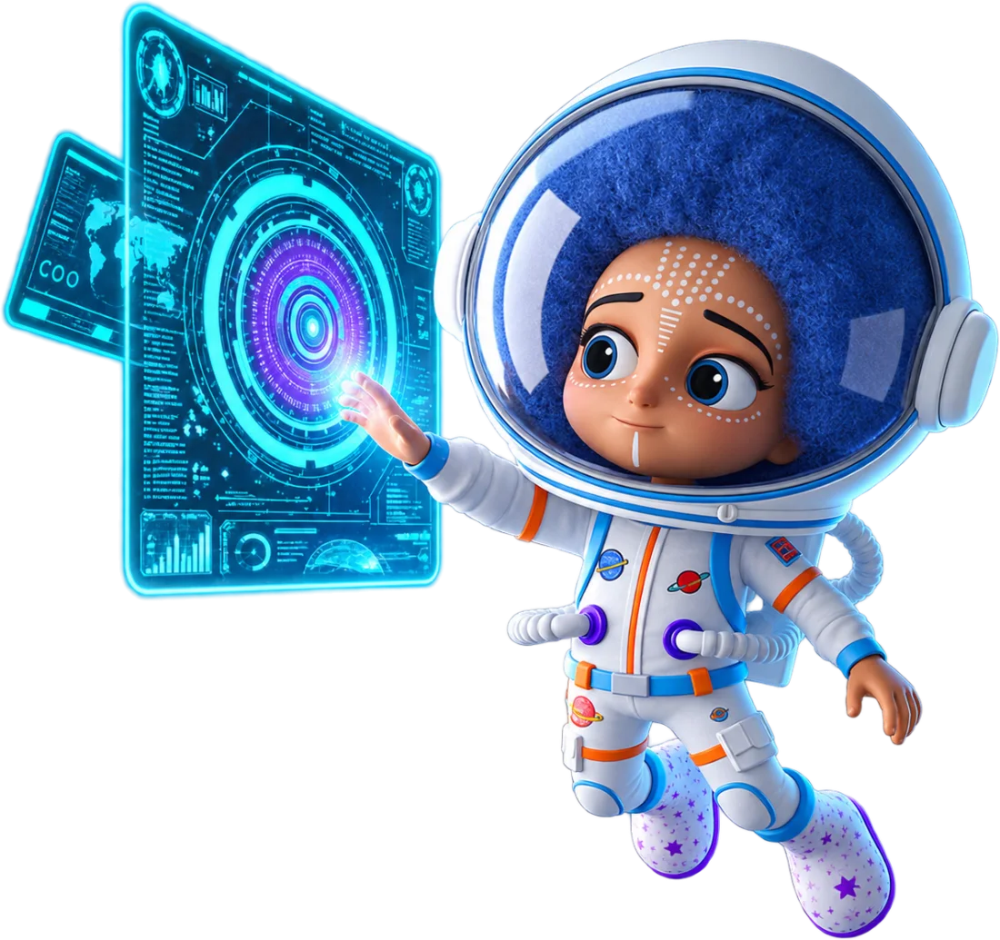
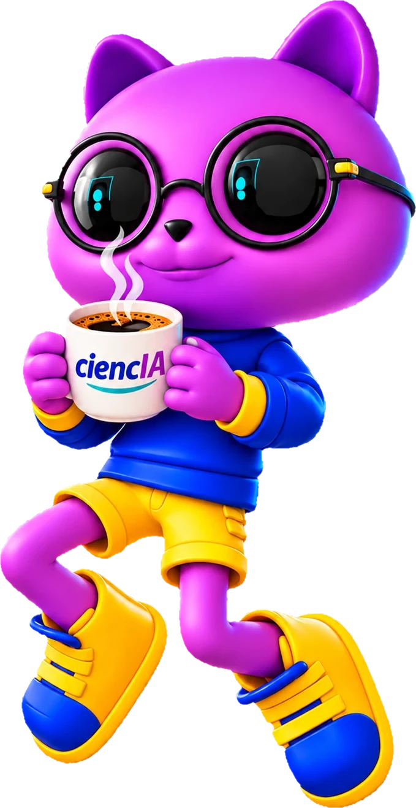

Miércoles, 11 de noviembre de 2026
NOV 1114:00-16:00
Coliseo de la Unidad Educativa Amazonas
Calle Ambato y Gamboa
Del 9 al 13 de noviembre de 2026 en Orellana, El Coca.
Faltan para los primeros talleres
Ministerio de Educación, Deporte y Cultura
Días de aventura, aprendizaje y creatividad para docentes y estudiantes. Ciencia, tecnología, robótica e inteligencia artificial en la ciudad de El Coca.
Conoce los talleres
¿Qué es?
Los Campamentos Escuel@s que me inspiran son una iniciativa del Ministerio de Educación, Deporte y Cultura del Ecuador, diseñada para potenciar las habilidades, la creatividad y el talento de docentes y estudiantes.
Este año, El Coca se convierte en el epicentro de la innovación y el aprendizaje. Durante una semana, los participantes vivirán experiencias transformadoras a través de talleres, hackatones y concursos, hasta llegar a un gran festival de cierre.
Del 9 al 13 de noviembre vas a descubrir y experimentar con:
¡Y un gran festival de cierre!
Agenda
Cada grupo tiene sus horarios: revisa los tuyos en el detalle de cada taller.
10Martes
noviembre
11Miércoles
noviembre
12Jueves
noviembre
13Viernes
noviembre
Actividades
Descubre las áreas de aprendizaje guiadas por las instituciones aliadas del campamento.
Evento del campamento
El Café con-CiencIA es un espacio de encuentro, diálogo e intercambio de conocimientos que busca acercar la ciencia, la tecnología y la innovación a estudiantes, docentes y comunidad educativa, mediante conversaciones dinámicas y participativas con expertos en diferentes áreas del conocimiento.
A través de un ambiente amigable y relajado, los participantes tendrán la oportunidad de interactuar directamente con especialistas, conocer nuevas ideas, resolver inquietudes y compartir sus opiniones sobre temas de interés, como la inteligencia artificial, la ciencia, la tecnología y su impacto en la vida cotidiana.
Esta actividad promueve la curiosidad, el pensamiento crítico y el aprendizaje colaborativo, convirtiendo la ciencia en una experiencia cercana, interesante y accesible para todos, donde preguntar, escuchar y compartir se convierten en las principales herramientas para aprender.

NOV 1114:00-16:00
Coliseo de la Unidad Educativa Amazonas
Calle Ambato y Gamboa
Sedes
El Coca, capital de la provincia de Orellana, en la Amazonía ecuatoriana, será el escenario de este encuentro educativo lleno de aprendizaje, diversidad y talento.
NOV 10-1208:00-17:00
NOV 1009:00-11:00
Cancha de la Unidad Educativa Medardo Ángel Silva
Calle José Feliciano y Santa Rosa
NOV 1114:00-16:00
Coliseo de la Unidad Educativa Amazonas
Calle Ambato y Gamboa
NOV 1210:00-12:00
Coliseo de la Unidad Educativa Amazonas
Calle Ambato y Gamboa
NOV 1309:00-11:00
Coliseo de la Unidad Educativa Amazonas
Calle Ambato y Gamboa
La convocatoria a docentes, estudiantes y autoridades se realiza a través de las instituciones educativas y del Distrito de Educación correspondiente (Zona 2, distritos 22D02 y 22D04).
Explora los talleres